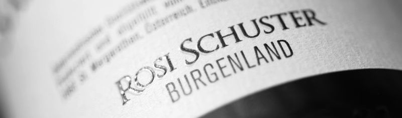

Die Beschäftigung vor allem mit den Rebsorten Blaufränkisch und Sankt Laurent, die Charakterisierung der
jeweiligen Herkünfte und die Auseinandersetzung mit den vorhandenen Böden und Mikroklimata war und ist
unser erklärtes Ziel.
- Hannes Schuster